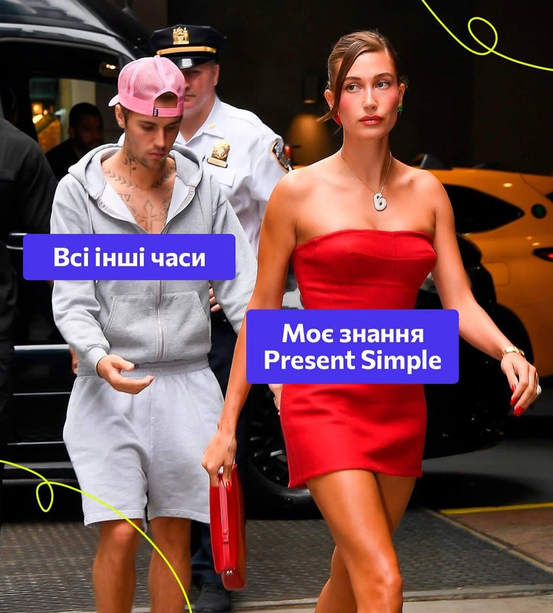
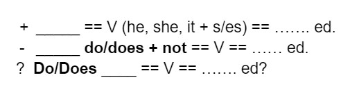

PRESENT SIMPLE
ТЕПЕРІШНІЙ ЗВИЧАЙНИЙ ПРОСТИЙ ЧАС
It`s meme about me
-
Rules або коли використовуємо
- Постійна, регулярна, повторювана дія (I wake up at 6:15 a.m)
- Закони природи (The plants grow better in the sun.)
- Розклад - уроків, поїздів, тощо (The train leaves at 3pm.)
- LOVE, LIKE, NEED, HATE, WANT, BELIEVE, PREFERE… - ONLY SIMPLE TENSES (I want a coffee.) Non-continuous Verbs
- Спортивні коментарі (He takes the ball, he runs down the field, and he scores!)
-
Markers або Слова маркери часу Pr.Simple
- Every day, every year, every oes (time) В КІНЦІ
- Always, usually, often, sometimes, hardly ever, never ПІСЛЯ ІМЕННИКА
-
Construction або Конструкція речення в Pr.Simple
Examples
- +Cats like milk.
- -They don't run every day.
- ?Do they visit you?
- + I drink coffee ed. She drinkS coffee ed.
- - I don’t drink tea ed. She doesn’t drink coffee ed.
- ? Do you drink coffee ed? Does he drink coffee ed
-
To be or Auxiliary verbs
HE, SHE, IT - does / I, WE, YOU, THEY - do
Examples
- Does --He doesn't look like a brother. She doesn’t run away from problems.
- Do --Do you study? Parents don’t live with us.